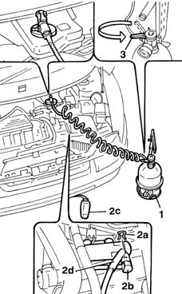

1820B08 Clutch release HYDRAULIC SYSTEM - Bleeding air and restoring level
- Path
- Procedures > 18 CLUTCH > 1820 CLUTCH RELEASE CONTROLS > 1820B HYDRAULIC CLUTCH SYSTEM > 1820B08 Clutch release HYDRAULIC SYSTEM - Bleeding air and restoring level
- Kind
- repair procedure (removal / refitting; the operation number is the code)
- Applies to
- all engines; all production periods
- Interactive page
- https://sloeber94.github.io/elrnDB-fMltpl/en/#/2891530
Applies to: all engines; all production periods; only with equipment: Right hand drive
Carry out op. 1048A10 AIR CLEANER FILTERING ELEMENT - REPLACE
Check that the brake/clutch fluid contained in the reservoir is at the maximum mark; if not, top up with the recommended fluid. if not, top up with the recommended fluid. When topping up the brake/clutch fluid, remove the reservoir cap and fill to the maximum mark.
 | Type | Component | Name | Qty. |
|---|---|---|---|---|
- | Synthetic fluid | BRAKE FLUID | TUTELA TOP 4 | 0.4 |
The symbol on the container identifies synthetic type brake/cutch fluids as opposed to mineral type fluids. The use of mineral type fluids irreparably damages the special rubber seals in the hydraulic braking system.
Check that the brake/clutch fluid level is between the MIN and MAX marks.
1. Remove the cap from the brake/clutch fluid reservoir and connect the equipment to the reservoir.
 | Name | Country |
|---|---|---|
1 | Anti-pollution | 1.806.097.000 |
2. Lift the clip (2a) and move the fluid pipe (2b) back until the first click, so as to open the bleed valve built into the actuator, then connect the pipe (2d) and the reservoir (2c) for the collection system to the bleed valve on the actuator.
3. Slowly open the fluid reservoir cock.
Wait until all the air contained in the hydraulic system has emerged.
Push the fluid pipe towards the actuator and lock it in position with the retaining clip.

Applies to: all engines; all production periods; only with equipment: Right hand drive
Complete with op. 1048A10 AIR CLEANER FILTERING ELEMENT - REPLACE
Topics linked from this page (1)
Topics that link to this page (6)
- 1280B21 (Pump) - MASTER CYLINER R.R. for right hand drive versions
- 1280B30 OPERATING CYLINDER/CLUTCH HYDRAULIC ACTUATOR - R.R.
- 1280B33 FLEXIBLE PIPE from clutch fluid reservoir to rigid intermediate pipe - R.R. for right hand drive versions
- 1280B35 FLEXIBLE PIPE between intermediate rigid pipe and (pump) - master cylinder R.R. for right hand drive versions
- 1280B43 RIGID PIPE from clutch reservoir to (pump) - master cylinder R.R. for right hand drive versions
- 1280B45 RIGID supply PIPE from (pump) - master cylinder R.R. for right hand drive versions